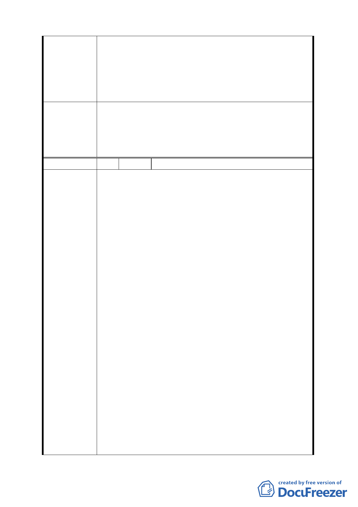

公服務區（二）（原倉儲專業區）」、「工商混合區」及
「工商服務展售區」之未規定事項，既依本市土地使
用分區管制規則第一種商業區規定辦理，自得適用綜
合設計放寬容積獎勵，但應就容積獎勵部分辦理回
饋，回饋數量以增加容積之半數計算。另刪除附表 1-1
各使用分區之容積率「上限」文字，併請提會審議。
為利計畫執行一致性，有關「內湖區新里族段羊稠小段附
近地區都市計畫案（五期重劃區）」增列「辦公服務區
委員會決議 （一）」、「辦公服務區（二）」、「工商混合區」及「工商服
務展售區」適用綜合設計放寬容積獎勵及應辦理回饋之相
關規定；併同刪除案內各使用分區之容積率「上限」文字。
編 號 3 陳情人 驪暉實業股份有限公司
一、 本計劃案內之變更目的載明，係為因應產業變化及需
求，進而放寬科技產業發展相關產業進駐，建立彈性
土地使用管制機制，以促進本市科技產業之持續發
展。
二、 五期重劃區內之倉儲專業區，緊鄰中山高速公路成功
交流道及環東基河快速道路，為內湖舊有工業區及南
港經貿園區產業垂直分工之區位中樞其轉運配送交
通順暢，為都市計畫最好之規劃案。
‧ 公告中已將之調整為以科技產業為主之辦公服務
區。但保有可設立為倉儲業及一般批發業之彈性使
用並取消原計劃『其供第三十八組倉儲業，第三十
九組一般批發業使用之樓地板面積需達二分之ㄧ以
陳情理由
上』之規定。
‧ 綜上可知調整之考量應可證明本地區已無設置倉儲
之必要且為考量避免同棟建物有辦公室與批發倉儲
混用之不良規劃，也取消倉儲批發業使用面積需達
1/2 以上之規定，上述之調整應屬最佳之方案。
三、 大彎南段工業區（供倉儲使用）原即已允許比照『臺
北市土地使用分區管制規則』第三種工業區可使用組
別，但有『其供第三十八組倉儲使用之容積樓地板面
積，應達申請基地總容積樓地板面積之二分之ㄧ以
上』之限制。
‧ 本次計畫案內漏未審酌上述之取消限制。
‧ 本計畫書第十三頁發展課題案內亦載明大彎南段工
業區（供倉儲使用），部分倉儲批發業者變相經營大
型賣場，致原倉儲物流功能模糊化。
6